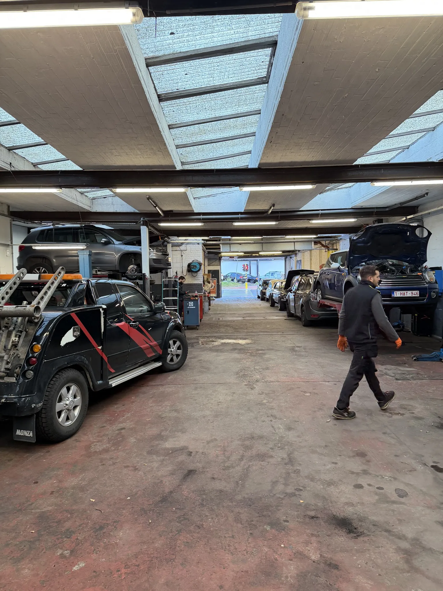
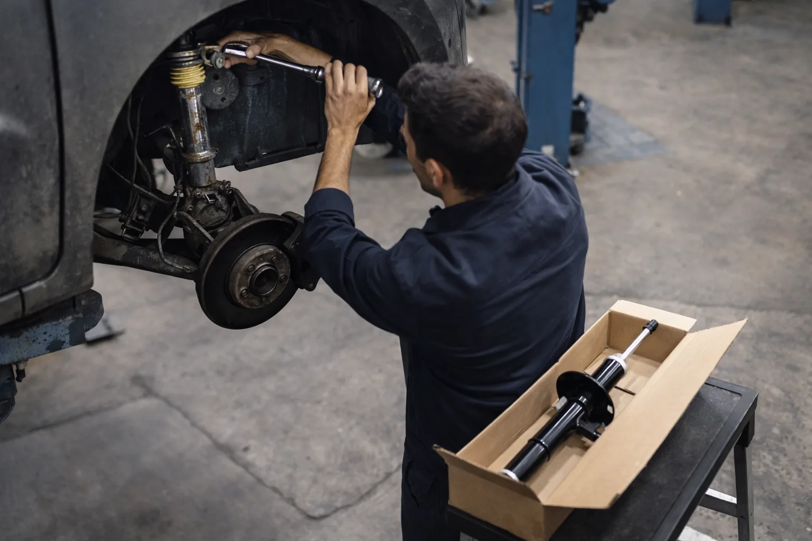
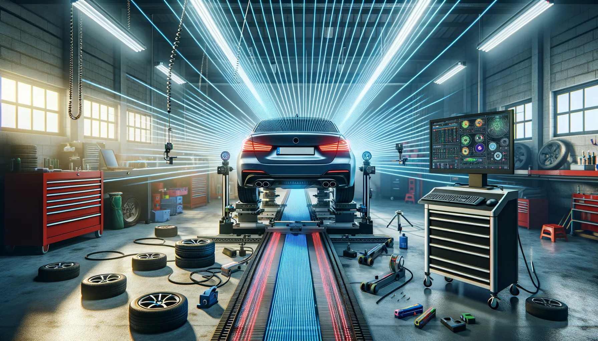

>Trekt uw auto naar rechts? Kloppend geluid in de bochten? Stuur dat trilt op de snelweg? Bij DMT AUTOGROUP diagnosticeren en herstellen we alles wat met stuurinrichting en ophanging te maken heeft. Schokdempers, kogellagers, silentblokken, stuurbekrachtiging, uitlijning. Alle merken.
Een schokdemper gaat niet van de ene dag op de andere kapot. Hij sterft langzaam. En dat is precies de val: u went aan een verslechterd weggedrag zonder het te beseffen. Tot de dag dat u noodremming maakt en de auto 5 meter langer nodig heeft om te stoppen. Of u neemt een rotonde iets te snel en de auto slingert als een boot.
De tekens die niet liegen: de auto blijft stuiteren na een verkeersdrempel in plaats van in één beweging te stabiliseren. Uw banden slijten onregelmatig — meer aan één kant dan de andere, of met kale plekken naast nog goede zones. De auto "duikt" hard met de neus bij het remmen.
We vervangen schokdempers altijd per paar — links en rechts van dezelfde as. Een nieuwe schokdemper links plaatsen en de oude rechts laten zitten, dat creëert een onevenwicht. Dat doen we niet.
Qua prijs: bij een concessie rekent u 800 tot 1400€ voor de vervanging van een paar schokdempers vooraan (onderdelen + arbeid). Bij een onafhankelijke garage zoals de onze is het beduidend minder met onderdelen van gelijkwaardige kwaliteit — Sachs, Monroe, Bilstein, dezelfde merken als in de originele montage. Het verschil is dat we niet het uurtarief van een premium concessie aanrekenen.
Niemand denkt aan kogellagers. Tot de dag dat het klopt in de bochten.
Draagarm- en stuurkogellagers zijn scharnieren — ze laten de wielen draaien en op en neer bewegen over hobbels. Als het beschermrubber scheurt, verdwijnt het vet en komt er water binnen. Het kogellager krijgt speling. Resultaat: doffe klappen als u over een kuil rijdt, een stuur dat "los" aanvoelt in het midden, en een technische keuring die uw auto weigert voor "overmatige speling in de stuurgewrichten".
Het is trouwens een van de meest voorkomende redenen voor afkeuring bij de keuring in België. We zien regelmatig klanten binnenstappen met hun rode keuringsrapport in de hand: "speling kogellager linksvoor". We vervangen het onderdeel, sturen terug naar de keuring, opgelost.
Silentblokken volgen dezelfde logica. Het zijn rubberen blokken die trillingen opvangen tussen het chassis en de draagamen. Na 80 000-120 000 km barst het rubber, verhardt het, en doet het zijn werk niet meer. U voelt elke oneffenheid van de weg in het stuur. De auto wordt luidruchtig op de snelweg. En de banden slijten schuin omdat de uitlijning compleet scheefloopt.
Is het stuur van uw auto hard geworden? Moet u kracht zetten om te draaien, vooral bij een parkeerbeweging? Twee mogelijkheden: hydraulische of elektrische stuurbekrachtiging. De diagnose is verschillend voor elk type.
Hydraulische stuurbekrachtiging: dat is het klassieke systeem dat u vindt op de meeste auto's tot het midden van de jaren 2010. Een pomp aangedreven door de motor stuurt olie onder druk naar het stuurhuis. Als de pomp vermoeid raakt, wordt het stuur hard en hoort u een jankend geluid als u volledig indraait. Als het stuurhuis lekt, vindt u rode olievlekken onder de auto. En het niveau van het reservoir stuurbekrachtiging daalt.
Elektrische stuurbekrachtiging (EPS): recente auto's gebruiken een elektromotor rechtstreeks op de stuurkolom. Geen olie, geen pomp. Als het uitvalt, is het vaak de elektronische module of de koppelsensor. Het stuurlampje gaat branden op het dashboard en het stuur wordt plots heel zwaar. We diagnosticeren dit met het constructeurtool.
In beide gevallen: wacht niet te lang. Rijden zonder stuurbekrachtiging lukt op een recht stuk. Maar een nooduitwijkmanoeuvre met een zwaar stuur is gevaarlijk. Punt.
De uitlijning is de stand van uw wielen ten opzichte van het chassis. Als die niet meer klopt, vertelt uw auto u dat op verschillende manieren: ze trekt naar rechts of links, het stuur staat scheef als u rechtdoor rijdt, uw banden slijten aan één kant (de binnen- of buitenkant).
We doen de uitlijning systematisch na elke vervanging van een ophangonderdeel — kogellager, draagarmen, stabilisatorstang, schokdemper. Een draagarmen vervangen zonder de uitlijning te hernieuwen, is alsof u nieuwe banden monteert en ze scheef laat afslijten. Dat slaat nergens op. En toch zien we auto's binnenkomen met nieuwe banden die al aan de binnenkant zijn opgegeten na 10 000 km, omdat de uitlijning nooit hernieuwd is na een kogellagersvervanging.
De uitlijning raakt ook verstoord na een klap: een stoep te hard geraakt, een forse kuil, een aanrijding. Als uw stuur niet meer recht staat na zo'n incident, kom het laten controleren. Het is snel gedaan en het kan u behoeden voor het ruïneren van een set banden van 600€.
Bij DMT AUTOGROUP hebben we 15 jaar ervaring met wielophangingen, alle merken. We weten wat we zoeken en vervangen alleen wat nodig is. Geen opgeblazen offertes, geen onderdelen die "uit voorzorg" vervangen worden zonder reden.


Een auto die naar één kant trekt, is bijna altijd een probleem met de uitlijning of een versleten ophangonderdeel — kogellager, silentblok, draagarmen. Soms is het gewoon een sporing die hernieuwd moet worden na het raken van een stoep. We controleren alles in 30 minuten en vertellen u precies wat er vervangen moet worden.
Een kloppend geluid in de bochten is typisch een stuurkogellager of een silentblok van de draagarmen dat speling heeft. Het kan ook een gebroken stabilisatorstang zijn. Dat soort dingen zien we meteen op de brug. Als het geluid recent is, laat het snel controleren — een kogellager dat volledig loslaat, betekent een wiel dat loskomt.
Bij een concessie rekent u 800 tot 1400€ voor een paar voor of achter. Bij ons is het minder met merkonderdelen (Sachs, Monroe, Bilstein). De exacte prijs hangt af van uw model — een schokdemper voor een Polo kost niet hetzelfde als voor een Tiguan. Bel ons met uw nummerplaat, we geven u een prijs in 5 minuten.
Ja, dat is de klassieke test. Een schokdemper in goede staat stabiliseert de auto in één beweging. Als hij meerdere keren stuitert, zijn uw schokdempers versleten. Andere tekens: de auto duikt bij het remmen, slingert in de bochten, en uw banden vertonen onregelmatige slijtage. We vervangen ze altijd per paar — links en rechts van dezelfde as.
Absoluut. Kogellagers met speling, lekkende schokdempers, gescheurde silentblokken — dat alles is een afkeuring bij de keuring. We zien regelmatig klanten die binnenkomen na een afkeuring voor "overmatige speling in de stuurinrichting". We vervangen wat nodig is en sturen u terug naar de keuring met de zekerheid dat het goedkomt.
Diagnose ophanging en stuurinrichting — alle merken
Maandag — Vrijdag · 08:30 — 18:00
Mechelsesteenweg 270, 1933 Zaventem